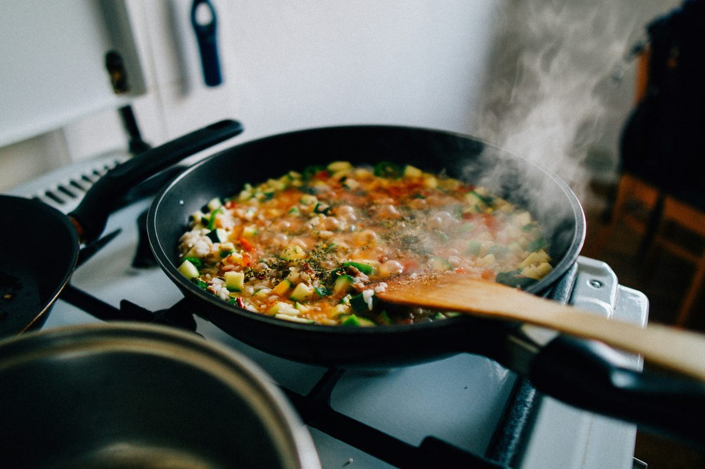

り
りく
@riku_kitchen
冷蔵庫の残り野菜で炒め煮
玉ねぎ、ズッキーニ、パプリカ、鶏ひき肉をトマトで炒め煮に。 味付けは塩とハーブだけでも十分おいしい。 多めに作って、明日はパスタにアレンジします。

玉ねぎ、ズッキーニ、パプリカ、鶏ひき肉をトマトで炒め煮に。 味付けは塩とハーブだけでも十分おいしい。 多めに作って、明日はパスタにアレンジします。

このページは「あとでクリップ」の紹介用に作成したサンプル投稿です。人物・内容は架空のものです。